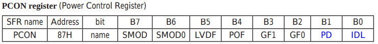
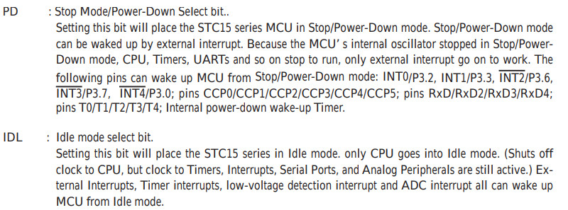
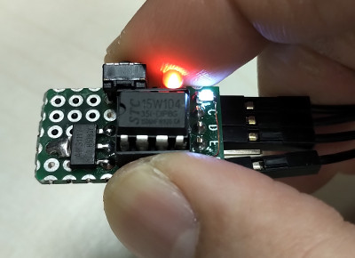

參考資訊：
http://plit.de/asem-51/
http://www.stcisp.com/stcisp620_off.html
https://sourceforge.net/projects/mcu8051ide/
STC15W104支援兩種省電模式：Power-Down(極省電, 0.1uA)和Idle(省電, 1.8mA)，只要設定PCON的PD和IDL位元即可


.org 0h
jmp _start
.org 13h
reti
.org 100h
_start:
setb p3.2
setb ea
setb ex1
setb it1
orl 87h, #02h
loop:
setb p3.2
call delay
clr p3.2
call delay
jmp loop
delay:
mov r0, #255
d0:
mov r1, #255
djnz r1, $
djnz r0, d0
ret
.end
編譯
$ mcu8051ide --compile main.s
完成
